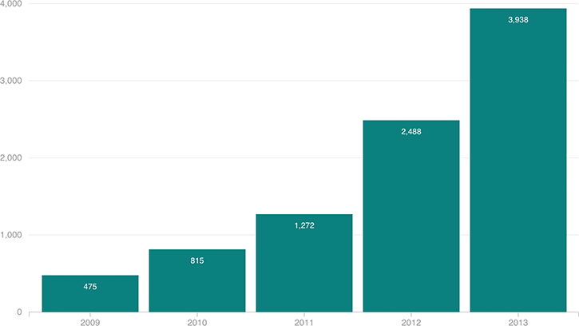

Small But Growing Number Of Women Freezing Their Eggs
The number of women choosing to freeze their eggs at fertility clinics in the U.S. grew more than sevenfold between 2009 and 2013.

Notes
The Society for Assisted Reproductive Technology compiled these figures from its membership, which is composed of the majority of fertility clinics in the U.S.